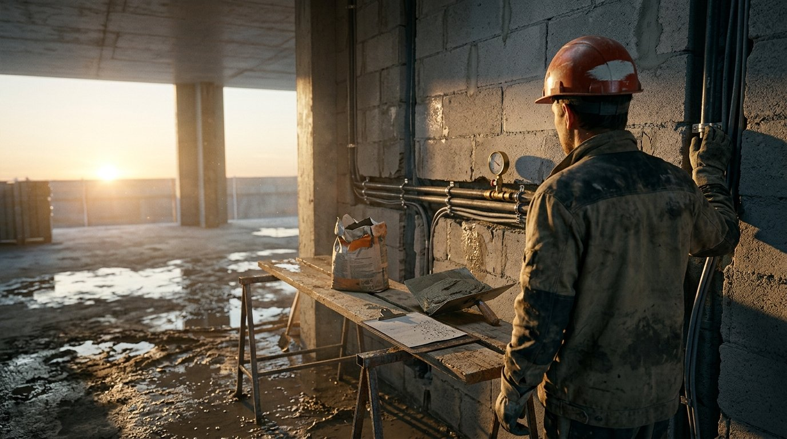
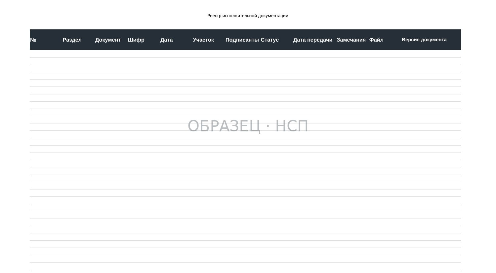
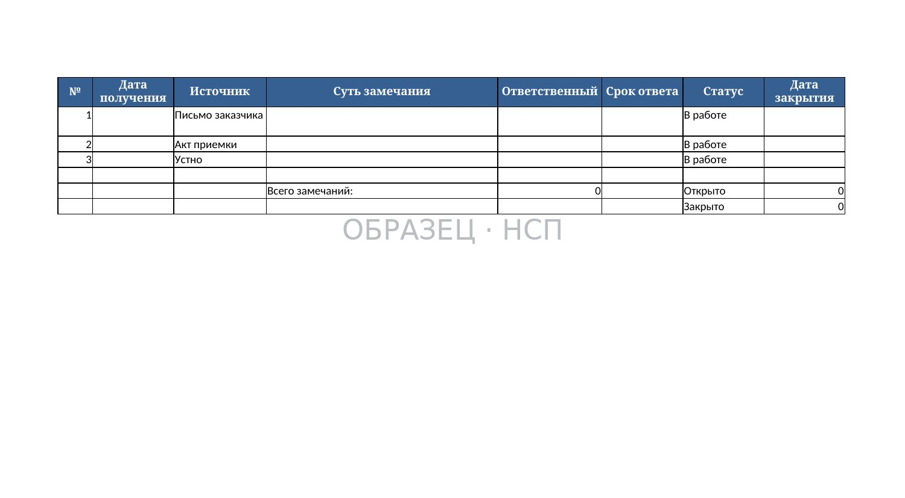
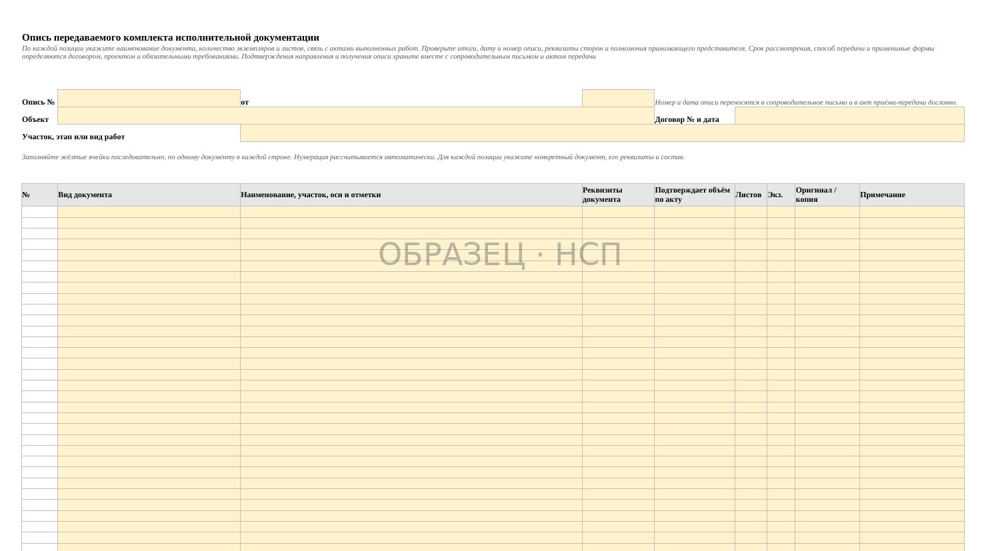

ИСПОЛНИТЕЛЬНАЯ ДОКУМЕНТАЦИЯ / МОНТАЖНЫЕ РАБОТЫ
Акт скрытых работ на монтаж: инженерные системы и конструкции

Трубопровод в полу залит стяжкой, кабель ушёл в штробу под штукатурку, воздуховод закрыт подвесным потолком — и на этом участке ПТО просит акт освидетельствования вместе с протоколом испытания. Протокола нет: систему опрессовали после того, как зашили. Вскрывать участок ради подписи никто не будет, а объём в КС-2 уже предъявлен и висит без оплаты.
Скрытая работа на монтаже закрывается дважды
У общестроительной работы одно закрытие. Арматуру закрывает бетон, основание — стяжка, гидроизоляцию — защитный слой, и момент, в котором её ещё можно осмотреть, единственный. У монтажного узла таких моментов два, и это главное, что отличает его документацию от всей остальной.
Первое закрытие узел делает сам себе. Смонтированный трубопровод испытывают на герметичность, систему промывают или продувают, кабельную линию проверяют замерами. После испытания узел закрыт для доработки: разобрать соединение, чтобы «поправить одну мелочь», означает, что испытание больше не относится к тому, что смонтировано сейчас, и его придётся повторять целиком.
Второе закрытие делает смежник. Зашивка, штукатурка, стяжка, подвесной потолок, обратная засыпка — после этого узла не существует ни для осмотра, ни для замера.
Отсюда два документа, которые не заменяют друг друга и часто путаются местами. Протокол испытания говорит, что система держит и работает; он ничего не говорит о том, что трасса проложена по проекту, что крепления те и с тем шагом, а гильза в перекрытии есть. Акт освидетельствования говорит, что смонтированное соответствует проекту; без протокола он не подтверждает работоспособность. ПТО спрашивает оба, и спрашивает их вместе.
Что на монтаже уходит под закрытие
Перечень скрытых работ определяется проектом и договором, а не общим представлением о стройке: у одного объекта в него попадает то, чего у соседнего нет вовсе. Взятый у смежника перечень — самый частый источник дыры в комплекте. Проверять свой список стоит по разделам проекта, а узлы ниже встречаются на монтаже почти всегда.

- Трубопроводы в штробах, полах, шахтах и за зашивкой. Отопление, водоснабжение, канализация, внутренние пожарные линии — всё, что после отделки станет недоступно.
- Кабельные линии в штробах, в гофре в стяжке, за подвесным потолком, в закрытых лотках и в земле. Отдельно — соединения и ответвления, оказавшиеся в закрытом пространстве.
- Футляры и гильзы в местах прохода через стены, перекрытия и фундаменты, вместе с заделкой зазора между трубой и футляром.
- Уклоны самотёчных трубопроводов и воздуховодов. Величина задана проектом; после закрытия проверить её нечем, и спор об уклоне решается вскрытием.
- Крепления, подвесы и опоры: тип, шаг, способ анкеровки к основанию, компенсаторы и подвижные опоры там, где они предусмотрены.
- Закладные детали и проёмы под последующий монтаж — то, что бетонируется вместе с конструкцией и после этого не переносится.
- Узлы прохода через кровлю и наружные стены вместе с гидроизоляцией примыкания. Место, где смешиваются два раздела и два подрядчика.
- Изоляция трубопроводов и воздуховодов, включая участки, которые изолируются до подъёма на отметку.
- Огнезащитная заделка проходов через противопожарные преграды: узел закрывается отделкой, а спрашивают его отдельно и строго.
- Заземление и уравнивание потенциалов: соединения, которые после отделки окажутся под зашивкой или в стяжке.
Проверяется свой перечень графиком отделочных работ: по каждой позиции спросите, что она закрывает и есть ли на закрываемое акт. Позиции без ответа — будущие дыры в комплекте.
Порядок: испытание, освидетельствование, закрытие
Три действия, и переставить их нельзя. Каждая перестановка имеет цену, и цена эта — вскрытие уже закрытого участка.

Освидетельствовали, закрыли, потом испытали. Испытание показало, что узел не держит. Дефект внутри закрытого участка, искать его придётся по всей трассе, а вскрывать — по чужой отделке. Акт при этом формально есть, и он подтверждает соответствие проекту того, что через день пришлось разобрать.
Испытали, закрыли, потом вызвали на освидетельствование. Освидетельствовать нечего: осмотр — это осмотр, а не чтение протокола. Здесь у второй стороны могут возникнуть обоснованные замечания к процедуре освидетельствования и полноте доказательств; правомерность отказа от подписи зависит от конкретных требований и обстоятельств. Разговор переходит из технического в переговорный, где ваш объём соседствует с чужими замечаниями.
Всё сразу в конце этапа. Комплект собирается по памяти, даты подгоняются под даты, а сквозная нумерация выдаёт, что акты заводились пачкой в один день. Это первое, на что смотрят при проверке комплекта.
Рабочая последовательность выглядит так. Монтаж закончен на участке с понятными границами — от узла до узла, от щита до щита. Участок промывается или продувается, если это предусмотрено проектом, и испытывается; результат оформляется протоколом с датой. Вторая сторона вызывается на освидетельствование письменно, с фиксацией даты получения вызова. Освидетельствование проходит по открытому узлу, акт подписывается всеми участниками, и только после этого смежник получает фронт на закрытие.
Если вторая сторона не явилась, у вас остаётся документ о том, что вы вызывали, — это другая позиция, чем пустая строка в реестре. Срок вызова и порядок действий при неявке смотрите в договоре и в действующей редакции нормативных требований: они задаются там.
Что прикладывать к акту на монтаж
Акт на монтаж почти никогда не работает в одиночку. Приложений у него больше, чем у общестроительного, и возвращают его чаще всего именно за приложения.

| Приложение | Что в нём должно быть определённо |
|---|---|
| Исполнительная схема | Фактическое положение трассы: оси, отметки, привязки к строительным конструкциям, точки пересечений и переходов, места установки арматуры и креплений. Не перечерченный проектный лист, а то, что смонтировано. Отступления от проекта показаны на схеме и подкреплены документом о согласовании |
| Документы о качестве на материал | Паспорта и сертификаты на трубу, кабель, фитинги, крепёж, изоляцию — с привязкой партии к участку. Записи журнала входного контроля на те же партии |
| Протоколы испытаний | Испытание на герметичность, промывка или продувка, замеры по электрической части — состав определяется проектом и действующей редакцией свода правил на соответствующий раздел. Значения давления и параметров берутся из проекта и в протокол вписываются фактические |
| Фотофиксация до закрытия | Датированные кадры, по которым видно место: узел вместе с ориентиром — осью, проёмом, отметкой. Крупный план трубы без привязки не доказывает, что это ваша труба и ваш участок |
| Записи журнала работ | Даты монтажа, испытания и освидетельствования должны сходиться с журналом. Сверка комплекта идёт именно по датам |
| Проектная основа | Шифр проекта и лист, на котором выполнен узел, с указанием изменения, если работа шла по изменённому решению |
Состав и оформление исполнительной документации задаются приказом уполномоченного ведомства и относящимися к нему сводами правил. Перед правкой своих форм откройте действующую редакцию: наименования полей и состав приложений меняются, а страница в интернете за ними не следует.
Чем монтажный акт отличается от общестроительного
Разница не в бланке. Бланк тот же, а возвращают монтажные акты чаще, и причины повторяются от объекта к объекту.
- Предмет — участок системы, а не площадь. «Устройство стяжки» описывается помещением и площадью. «Монтаж трубопроводов» без границ участка не описывает ничего: у системы есть начало и конец, и в акте они должны быть названы — от какого узла до какого, какой стояк, какая линия щита.
- Приложение, которого у общестроя нет вовсе. Протокол испытания. Акт без него неполон по существу, и это самая частая причина возврата монтажного акта.
- Трасса расходится с проектом чаще, чем конструкция. Обход балки, перенос стояка из-за колонны, изменение отметки под чужое оборудование. Само по себе отступление нормально и решается согласованием; несогласованное и не показанное на исполнительной схеме отступление превращает акт в спорный документ.
- Участников больше. К подписантам добавляются те, кто отвечает за наладку, и подрядчик, который будет закрывать ваш участок. Полномочия проверяются до подписания: акт, подписанный человеком, у которого на дату подписи не было приказа, — акт без второй стороны.
- Материал прослеживается по партиям. На бетон смотрят по одному документу, на кабель и трубу — по маркировке и партии, и связь «партия → участок → акт» должна быть восстановима по комплекту, а не по памяти снабженца.
- Ритм сдачи не совпадает с ритмом закрытия. Монтажник привык предъявлять документы этапом, а отделка идёт по своему графику и до вашей готовности не ждёт. Именно на этом стыке акты теряются.
Реестр против графика отделки
Потерянный акт почти всегда теряется одинаково: работа была скрыта раньше, чем кто-то вспомнил, что её нужно освидетельствовать. Лечится это не аккуратностью, а одним реестром по объекту, в котором строка заводится в момент попадания работы в график, а не в момент её окончания.
Минимальный набор колонок такой: узел или участок системы, раздел проекта и лист, работа, которая его закрывает, подрядчик этой работы, плановая дата закрытия, дата и способ вызова на освидетельствование, дата испытания и номер протокола, номер акта, отметка о приложениях. Дальше реестр читается в одну сторону: любая строка, у которой плановая дата закрытия ближе, чем дата вызова, — это будущее вскрытие.
Второе, что стоит завести на монтаже, — правило о фронте. Смежник получает участок под закрытие после подписанного акта, и передача фронта фиксируется письменно. Пока такого правила нет, зашивают по готовности отделочника, а объясняться с ПТО приходится вам.
Зашили без акта: что делать
Ситуация обычная и не безнадёжная. Но действовать нужно от честной картины, а не от попытки задним числом сделать вид, что всё оформлялось вовремя.
- Выпишите участки, закрытые без акта, и отметьте, какие из них уже вошли в предъявленные КС-2. Спор пойдёт по этому пересечению, остальное можно закрывать в рабочем порядке.
- Соберите то, что осталось: записи общего журнала работ, накладные и паспорта на материал, исполнительные схемы, датированную фотофиксацию, переписку о ходе работ, протоколы испытаний, если испытания проводились.
- Направьте второй стороне письмо с описанием факта и предложением освидетельствовать доступным способом. На монтаже способов больше, чем на общестрое: повторное испытание системы целиком, инструментальный контроль, вскрытие контрольного участка по согласованному месту. Реакция на письмо тоже становится документом.
- Не датируйте акт прошедшим числом. Акт с честной датой и ссылкой на переписку слабее вовремя оформленного, но защищать его можно; подделанную дату защищать нельзя.
- Наведите порядок вперёд: реестр по объекту, письменные вызовы, передача фронта под закрытие по подписи. Дальше по этому объекту такой ситуации уже не будет.
Материал носит информационный характер: перечень скрытых работ, состав испытаний и порядок освидетельствования на конкретном объекте определяются проектом, договором и действующей редакцией нормативных актов, поэтому спорные позиции стоит проверять с профильным специалистом.
КОМПЛЕКТ P4 / 30 ФАЙЛОВ
Исполнительная документация: ведение, проверка и передача
30 файлов: 16 DOCX, 7 XLSX и 7 PDF. Рабочие формы, реестры, журналы и контрольные листы для ведения и проверки исполнительной документации, фиксации замечаний и передачи заказчику. Включены документы по освидетельствованию скрытых работ. Формы необходимо адаптировать под проект, объект и действующие нормативные требования.
24 900 ₽
Посмотреть комплект →Сопроводительное письмо, Excel-опись с автоматическим подсчётом листов, акты передачи ИД, журналы, контроль комплектности и работа с замечаниями объединены в комплекте документов P4. 30 файлов, 24 900 ₽.
БЕСПЛАТНО, ЗА EMAIL
Акт скрытых работ: какие работы его требуют и что в нём проверяют
Прежде чем спорить о форме акта, стоит закрыть вопрос перечня: какие узлы на вашем объекте вообще требуют освидетельствования и что чем закрывается. Плюс проверочный лист до подписания, реестр по объекту и письмо о порядке вызова второй стороны.
- Какие работы требуют акта освидетельствования
- Проверочный лист: что смотрят в акте
- Реестр актов по объекту
- Запрос о порядке освидетельствования